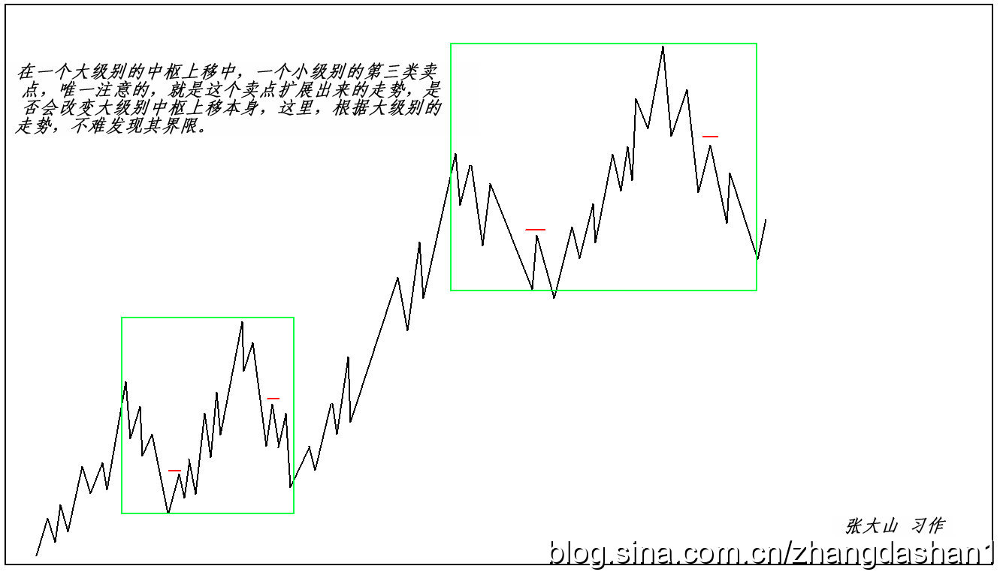
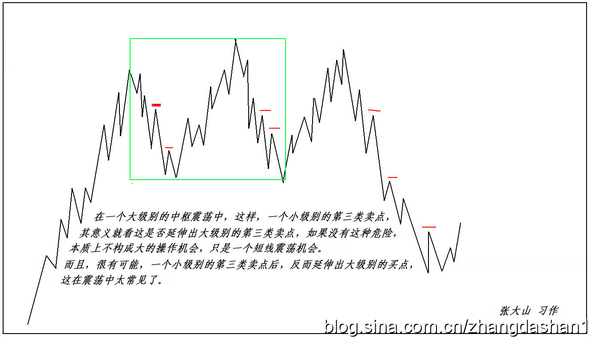
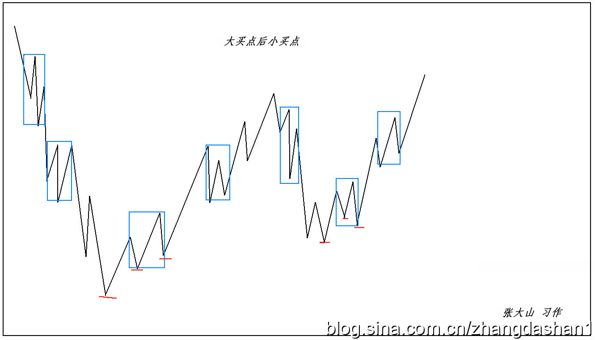
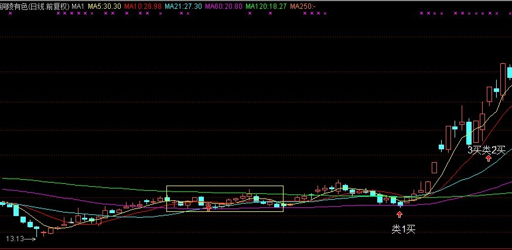
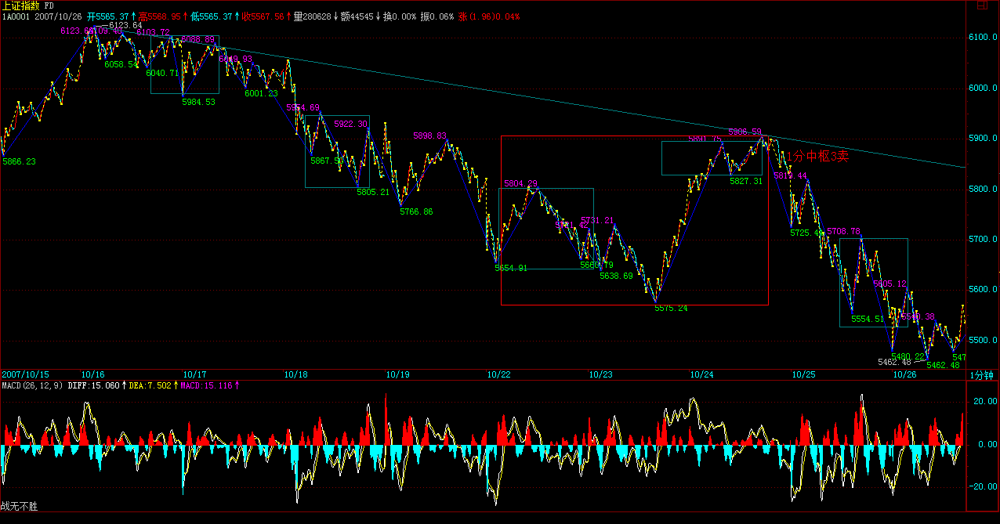
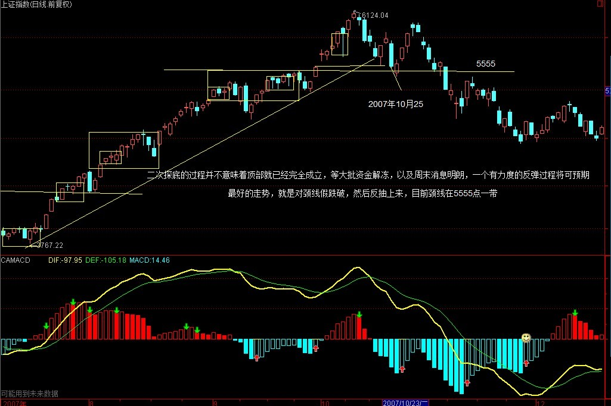
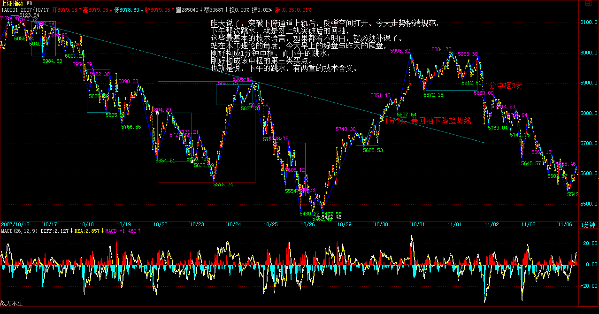

|
 |
教你炒股票86：走势分析中必须杜绝一根筋思维(2007-10-24 21:53:45)
一根筋思维的心理基础，就是企图找到一个永恒固定的公式，然后不管任何情况，只要套进去，就有一个现成答案。这种思维，把世界看成一个精密的机械，任何的运行，都等价于起点-结果模式，只要起点相同，就有相同的结果。这就是典型的一根筋思维。有些人，学本ID的理论，本质上就是希望找到这样的东西，却不知道，法成则人成，人不成，法何成？
一个很简单的实验，同一批人，同样的资金，同样的股本、同时开始股票运行的实验，显然，这个实验是不可重复的。因为，股票走势，归根结底，是参与者心理合力的痕迹，而心理，是不可重复的。否则，请问，有谁能百分百复制自己9月30日开盘那四小时的心理曲线？这都是一次性的，不可复制。而几千万、上亿人的交易的可复制性，就更没可能了。为什么？每天都是新世界，影响市场的因素，每天都在变化着，而这些因素对市场参与者的心理影响，更是模糊、混沌，由此产生的走势，很显然不具有任何百分百复制的可能性。
因此，从最开始的时候，就必须要有一个大的眼界，如果看1分钟就被锁在1分钟层面里，那搞100年都进步不了。
一个很简单的例子，也是最基础的一步，就是必须动态地把握各种概念。例如，第三类卖点，这在不同的情况下，其操作意义显然是不同的。不妨以此为例子，仔细分析一下：
一、在一个大级别的中枢上移中，一个小级别的第三类卖点，唯一注意的，就是这个卖点扩展出来的走势，是否会改变大级别中枢上移本身，这里，根据大级别的走势，不难发现其界限。因此，这种第三类卖点的操作意义，就不大，关键是警戒的意义。如果是短线的短差，那也是小级别的中枢震荡中来回操作，因此这第三类卖点也只是构成一个震荡意义的操作点。

二、在一个大级别的中枢下移中，这样，一个小级别的第三类卖点，其意义就是这卖点是否让大级别中枢的下移继续，如果继续，那就意味着这里没有任何的操作价值（当然，如果有卖空的，那是另算了）。这类第三类卖点的操作意义，基本没有，如果说卖，大级别都中枢下移了，好的卖点估计都过去了N的N次方个了，也就是说市场已经给你N的N次方卖的机会，你还没改正，那你大概更适合去卖豆腐了。
三、在一个大级别的中枢震荡中，这样，一个小级别的第三类卖点，其意义就看这是否延伸出大级别的第三类卖点，如果没有这种危险，本质上不构成大的操作机会，只是一个短线震荡机会。而且，很有可能，一个小级别的第三类卖点后，反而延伸出大级别的买点，这在震荡中太常见了。

第三最后说的这种情况，就是多空通杀中经常用到的一种技巧。通杀，就是要把所有人的舞步搞乱。怎么搞乱？就是买点卖点轮番转折，而且模式不断变化，让不同的操作模式都被破裂一次。而这种舞步错乱的本质，就是要触及不同的突破、止蚀位置，让止蚀的刚卖出的又回头；刚买入追突破的马上给一巴掌。
本ID理论，从来没有任何止蚀之类的无聊概念。有什么可止的？三大卖点，给三次机会，加上不同级别的，机会N多，你都没反应，等到缺胳膊少腿才去止蚀，那是有病，回火星去吧。
而只要把握了本ID的理论，那么第三那种情况，正好适合去凌波微步一番。
这里，还可以更精确地分析一把。根据先后已经(出现)买卖点的级别，无非以下几种情况。
1、大买点后小买点
这种情况，后面的小买点，往往构成相对于大买点的第二次介入机会，但不一定是最精确的机会。因为最精确的机会，一定是符合区间套的，而并不是任何的小级别买点，都必然在大级别买点对应的区间套中。也就是说，这种小级别买点，往往会被小级别的波动所跌破，但这种破坏，只要不破坏前面大级别买点所有构造的大级别结构，那就一定会有新的小级别波动，重新回到该买点之上。
大买点后，必然产生相应级别的结构，因为后面的小买点，不过是构造这大结构中的小支架，明白这个道理，相应的操作就很简单了。

2、大卖点后小卖点
和上面那种情况反过来就是。
(娇加：这种情况，后面的小卖点，往往构成相对于大卖点的第二次卖出机会，但不一定是最精确的机会。因为最精确的机会，一定是符合区间套的，而并不是任何的小级别卖点，都必然在大级别卖点对应的区间套中。也就是说，这种小级别卖点，往往会被小级别的波动所升破，但这种破坏，只要不破坏前面大级别卖点所有构造的大级别结构，那就一定会有新的小级别波动，重新回到该卖点之下。大卖点后，必然产生相应级别的结构，因为后面的小卖点，不过是构造这大结构中的小支架，明白这个道理，相应的操作就很简单了。）
3、大买点后小卖点
如果两点间有一个大卖点，那么，就可以归到第2种情况去。如果没有，那么这个小卖点后，将有一个小级别的走势去再次考验或者确认这个大买点后形成的大级别结构，只要这个走势不破坏该结构，接着形成的小买点，往往有着大能量，为什么？因为大结构本身的能量将起着重要的力量，一个结构形成后，如果小级别的反过程没有制造出破坏，一种自然的结构延伸力将使得结构被延伸，这是一种重要的力量。
4、大卖点后小买点 和上面反过来就是
（娇加：如果两点间有一个大买点，那么，就可以归到第1种情况去。如果没有，那么这个小买点后，将有一个小级别的走势去再次考验或者确认这个大卖点后形成的大级别结构，只要这个走势不破坏该结构，接着形成的小卖点，往往有着大能量，为什么？因为大结构本身的能量将起着重要的力量，一个结构形成后，如果小级别的反过程没有制造出破坏，一种自然的结构延伸力将使得结构被延伸，这是一种重要的力量。）
5、大中枢中的小买卖点
在一个大中枢里，是没有大买卖点的，因为出现第三类卖买点，就意味着这中枢被破坏了。这种大中枢中的小买卖点，只会制造中枢震荡。因此，这里买卖点通说，就是这类买卖点，一般不具有小级别的操作意义，这是最容易把多空搞乱的。
但是，其中有一种买卖点，往往具有大级别的操作意义，就是大级别中枢震荡中，次级别的买卖点。例如，一个5分钟的震荡里面的1分钟级别买卖点，就具有5分钟级别的操作意义。因为该买卖点后，无非两种情况：1、就是继续5分钟中枢震荡；2、刚好这次的次级别买卖点后的次级别走势构成对原中枢的离开后，回抽出第三类买卖点，这样，原来这个买卖点，就有点类第一类买卖点的样子，那第三类买卖点，就有点新走势的类第二类买卖点的样子了。（注意，这只是比喻，不是说这就是大级别的第一、二买卖点。）

注意，有些买卖点的意义是不大的。例如，一个1分钟的下跌趋势，在第二个中枢以后，相对的中枢的第三类卖点，就没有什么操作意义了，为什么？前面第一个中枢的第三类卖点哪里去了？趋势，本质上就是中枢移动的延续，这种，第一个中枢的第三类买卖点，本质上就是最后一个合适的操作的机会，后面那些如果还需要操作，那是证明反应有大毛病了。到第二个中枢以后，反而要去看是否这趋势要结束了，例如对上面1分钟下跌趋势的例子，跌了两个中枢以后，就要看是否有底背驰了，那时候想的是买点，不是卖点了。
而且，必须注意，对于趋势的转折来说，例如上面的1分钟下跌趋势，最后背驰转折后，第一个上去的线段卖点，很有可能刚好形成最后一个1分钟中枢的第三类卖点，这时候，这个卖点，几乎没有任何的操作意义，反而是要考虑下来的那个第二类买点。很多抄底的人，经常在第一次冲起后就给震掉，然后再追高买回来，就是没搞清楚这种关系。
如果你是抄一个1分钟级别的底，后面最坏有一个1分钟的盘整，连这盘整的格局都没有走势必完美，也就是最基本的三个线段都没形成就跑，不给震出来才怪了。
当然，有一种稳妥的办法，给那些对大级别背驰判断没信心的，就是都在第二类买点介入，当然，实际操作中，你可以完全不管第二类买点形成中的背驰问题，反正第一类买点次级别上去后，次级别回跌，只要不破第一类买点的位置，就介入。这样，只要后面的走势，在下一个次级别不破第一个次级别上去的高点，就坚决卖掉，如果破，就拿着，等待是否出现第三类买点，出现就继续拿着，不出现就卖掉。
按上面的程序，你甚至连背驰的概念都可以不管，所以，分清楚走势类型，其实就可以完美地操作了，其他概念，只是如虎添翼而已。
======================================================================================================
终于再次强调宏观调控，中国希望大大的。
(2007-10-25 15:43:22)
请问，今晚的月亮圆吗？
今天最大的消息，就是关于强调宏观调控的，这是本ID最希望看到了。这点，本ID在“中国经济，已需治理整顿。 2007-10-15
08:32:52”中已经强调，很高兴今天看到回应。
经济大局，最终决定市场大局，今天的消息，对所有心里有所希望的人，都是一个很好的提醒。
技术上，昨天已经把可能的情况进行最严密的分析，就是看那1分钟中枢的第三类买卖点情况，今天早上受消息影响低开后，第一小时的反抽刚好构成第三类卖点，这就是本ID理论规范下，短线最后的逃命线，

但必须注意，这个二次探底的过程并不意味着顶部就已经完全成立，等大批资金解冻后，以及周末消息明朗后，一个有力度的反弹过程将可预期。
注意，这个反弹，在最恶劣的情况下，就是对跌破颈线后的反抽，目前颈线在5555点一带。这种最恶劣的走势，就是先跌到诸如5300点甚至5000点，然后一个反抽上不了5555点，然后确认顶部，然后继续大幅度下跌，这种走势，最终的调整目标，将在4000点，甚至更低。
当然，最好的走势，就是对颈线假跌破，然后反抽上来，这样，甚至有再冲6000点的可能，当然，这是最好的走势，能否出现，多头答应，空头不一定答应，即使空头答应，政策面可能也不一定答应。(注：实际走势为最好这类，反弹到6004点）

本ID已经说过，反弹的操作，风险极大，如果你连第三类买卖点都分不清楚，那还是继续小板凳吧，这些反弹操作，你没资格参与。
虽然，本ID这一方已经全面大胜，但就像3600点大胜后，本ID要把后面的情况先说明一下。这次下来，为后面的低价股积聚了潜力，年底、明年的，又有不少好股票有好价位了，这才是这轮走势最大的用处。
节奏，有大节奏，也有小节奏。当然，首先必须有大思维、大节奏。这里的道道，自己漫漫体会吧。
先下，再见。
中国经济和股市的未来依然美好
(2007-10-25 21:04:33)
今天本不想说股票，但在这个月圆之时如期地鬼哭狼嚎的，一幅浮世绘，所以，本ID一早说，不于股市自由，就谈不上自由，因为这是世界上的一大炼狱。别以为股市就是股市，这里，有着最多的贪嗔痴疑慢，确实是一个好的修炼场所。所以，所有在股市中被股市的，都是有福慧的。受其灾，消其灾，三生有幸。
对年末的走势，本ID早有总体的分析。在“2007年末，资金与政策博弈下的走势分析 2007-09-17
00:41:48”里，已经对走势给出最明确的分析，本ID后面的所有判断与行为，都在9月17日把剧本公布了，6100点，在这帖子里明确分析过了，但有多少人能留意？大概都被每天的波动所消磨掉了。
没有大的思路、大的节奏，为每天的波动所折磨，那是被股票面首，而不是面首股票。
请看那9月17日帖子其中的一段
：“由于去年大盘涨幅是130.43%，收盘在2675.47点，按相应比例，6165点成为今年一个标杆式的点位。还有，深圳成分指数在96年的行情中，也如本次上海指数一样略微跌破1000点后展开，而前者最终在6100点上见大顶，因此6100点附近是后者行情一个特别值得留意的位置。”
还有最后结论性的一段：“反之，一旦资金面的肆虐超乎合理范围，那么大盘将演化为一种疯狂走势，即在今年内强行突破上面所说的6100点区域，这样，一次超530级别的调整将难以避免。”
该说的，其实早说了，大蓝图都没看明白，盯着每天的盘子有用吗？
那么，现在难道就是世界末日吗？
不是，中国经济和股市的未来依然美好。这里本ID反而要为各位打气，因为中国经济的基本面没有任何实质的改变，人民币升值也在加速中，一切利好的因素依然存在。
但是，正如本ID反复强调的，现在需要的是中级调整，为了中国股市的未来，这调整是必须的。
关于中国股市的最大蓝图，本ID在“神州自有中天日，万国衣冠舞九韶2007-03-19 08:52:42
”有着最明确的描画。这帖子发出的当天，大盘就拉出长阳，突破3000点下的震荡，展开了今年波澜壮阔的走势。
当时，大盘还在3000点下风雨飘摇，本ID明确说了：“在总市值超越GDP之前谈论股市的泡沫是可笑的，在中国股市总市值超越其GDP之前，第一阶段行情不会结束。”
后来，这一切都实现了，而且，目前这一阶段的行情其实并没有结束，在中级调整后，这行情依然要展开，依然要新高，这是毫无疑问的。
但是，一个合理的调整去积聚新的能量，让市场走势更加稳健，使得20年大牛市的基础更加牢固，这是必须的。
就像在3600点，本ID站出来说要满江红，因为在中国的市场，散户太多，散户天生就是死多，所以那肯定受欢迎。
而这次，本ID站出来说要做空，而且又刚好在提前说的6100点上阻挡了疯牛，这当然不会招人待见，但，为了中国股市的未来，这必须这样干。
试想，如果中国股市也如台湾、日本式地醉生梦死一次，然后是十几、二十年的大熊市，最终害的是谁？
特别中国，经济的转型还没完全结束，一旦资本市场被毁，经济转型所需要的核心动力就彻底丧失，最终伤害实体经济，而后面就是所有人的生活。
对于本ID这种人，经济好坏都不会影响到个人的风花雪月、99419，但绝大多数的人，特别那些还有住房、医疗、教育等等问题需要解决的人，一旦经济出现问题，将是最大的受害者。
最大的利好，对于任何一个中国经济的关系者来说，就是经济的长期稳定的发展，而不是暴冷暴热。
我们需要的是长牛，而不是疯牛。
中国股市的牛市依然，中国股市的未来依然是世界上机会最多的，有着最远大的前途，必将成为世界上最大的市场。暴风雨，只是让它更健康，如果没有这样的大视野，那么，在市场上注定不可能成功。
中国股市充满机会，未来无限。而这机会、未来如何成为你自己，这才是对每个人最重要的问题。
这市场不怕做错了，只怕死不改错。好好反思一下自己的操作，大概上面这个问题，就能更好地找到正确的答案了。
5555点守住，反弹酝酿ing
(2007-10-26 15:13:40)
上几天来的香港人的头今天过来了，在工体北他们的总部等着，本ID只能快速说两句，抱歉了。
本ID已经把5555点这个位置告诉各位了，这是颈线位置，守住，那么还有机会来一波有力度的反弹，否则，形势就更恶劣了。
由于股指期货、中石油等的预期，所以中字头依然在反弹中继续扮演最重要的角色，而一些跌到重要均线位置的题材股，也会有一定的表现，但将趋于个股，板块效应不大。
当然，反弹是否能在5555点颈线酝酿成功，还要看周末消息面的情况，如果没有特别的消息，在资金解冻前后，这个反弹将出现并延续，而中石油的上市表现，将决定这个反弹的最终命运。
后面的游戏，关键是考技术，以及一看反弹不行就跑的灵活性，如果技术和灵活上都达不到要求，那就算了，这种活，一旦失手，痛但一定不会快乐着，除非你有受虐倾向。
好了，周末，让股票磨墙去。
今天不得不破例说股票
(2007-10-27 16:44:21)
虽然道理上，那地方不是随便可以住的，但其实，只要认识门道，确实可以很随便就入住，特别今天开那所谓衍生品大会的地方。那地方今天就这么把股指期货如此地随便了一下，难道就为了里面那些别的最高档酒店也没有的古董玩意？
一些外国人或者外地来的，总是以能被带到那地方住为高规格的接待。其实，不妨揭密一下，那地方，如果认识门道，其价格比北京最好那几家酒店都要便宜点。当然，这里指的是标准的房间。而今天的衍生品在这个还算新装修的地方开，不知道是否有点上面那种希望住这种房子人的心态，说得难听点，就是土老冒心态。
土老冒心态，当然不一定是一般认为的土老冒才有。像现在，急着要被期货股指一下的心态，就与此类似。现在推出期货的时间根本就不合适，除非已经把股指期货当成一种住国宾馆显摆的玩意了。
住国宾馆的，特别那些做生意的去住的，往往不过是为了忽悠，真有实力是不用忽悠的。同样，没有股指期货，中国资本市场依然可以辉煌。
竟然有人在会上说，有了期货，就有了做空机制，就可以如何如何，股市就不会单边乱涨之类的玩意。说这话的人难道没经历过327？还有319难道不是一直单边乱涨最后导致国债期货停了？
本ID早把狠话说了，在目前的流通量环境下，期货推出后，主力做空的最后一定死得尸骨无存。连股票的卖空都没有，谈什么做空机制？想推出股指期货，先把流通量增大，卖空给搞了，否则，越期货越死人。
当然，本ID一点都不担心目前的状况，新官都没上任，更谈不上三把火，现在的，想说什么是什么，关键是说了算不算数。
如果目前的流通量与交易机制不变，那么，一旦在近期确认期货推出，本ID将成为最坚定的多头。当然，可能是先诱空再多。
汇丰都N百了，工行为什么不可以？把工行、中行干上200元，又有什么不可以的？
疯狂，谁不会？疯一把，一起死。早死早干净。
明天面临下降通道上轨压力
(2007-10-29 15:25:18)
5555点站稳后反弹，这都在预计之中早说了，明天面临下降通道上轨压力，这是技术的话，基本面上，如果指数期货出来，点位根本没意义，特别在形成多空对赌的局面时，那时候，只需要关于如何把对方打爆了，什么点位不点位的，如果夹到100000点才能把空头夹死，那当然也是可以这样操作的。
期货，从来都是你死我活的斗争，没有什么仁慈可说的。拥有相应的筹码，就是拥有市场的发言权，有发言权比什么都重要。
明天一旦冲破上轨压力，反弹的空间将被彻底打开。当然，这个位置出现反复也是很自然的。由于大面积资金被冻，所以没什么消息的情况下，这反弹是不会轻易结束的。
如果期货在年内推出，那么6100点当然不会是什么位置了，这是目前大盘最大的变数。但无论走势到什么位置，其实和大多数人无关，因为真正上涨的股票基本依然是带指数的，其他股票，大多数只能暂时继续反弹然后回跌，最多保持盘整的走势，没什么大戏。
不过短线，超跌股票的反弹还是有一定机会的，但风险同样大。至于中字头，有期货这保护伞，当然是爱多疯有多疯。
期货出来后，个股分化将继续加剧，散户的生存空间进一步减少，事情就是这样了，天要下雨，自己找伞吧。
突破上轨，反弹空间如期打开。
(2007-10-30 15:26:44)
昨天说了，突破下降通道上轨后，反弹空间打开。今天走势极端规范，下午那次跳水，就是对上轨突破后的回抽，这些最基本的技术语言，如果都看不明白，就必须补课了。
站在本ID理论的角度，今天早上的绿盘与昨天的尾盘，刚好构成1分钟中枢，而下午的跳水，刚好构成该中枢的第三类买点。也就是说，下午的跳水，有两重的技术含义。
现在的走势十分简单，只要不出现回到这1分钟中枢，而在上面形成新的中枢，那这反弹的级别就至少不小于1分钟的上涨。这样，操作就极为简单，耐心等待背弛出现就可以。

短线总体的节奏，本ID在上周五“5555点守住，反弹酝酿ing 2007-10-26
15:13:40”已经说得很明确了，就是5555颈线站稳后，反弹至少延续到中石油资金解冻前后。就算是最坏的情况，也要先把这些资金骗进来再说，否则太对不住这3万亿资金的热情。
中期走势，本ID已经说得很清楚，如果期货出来，那点位就没什么意义了，6100点也不是大不了的位置，那时候只有疯狂，没什么点位不点位的。而如果期货被阻击出不来，那么，6100点当然还是一个位置，这次的反弹，也就是构成顶部图形的第二个尖。至于这个尖，比前面一个高点还是低点，都问题不大，例如双头，可能就低点；头肩顶，就高点，这都没有太大的影响。
无论什么顶部的最终图形，5555点都是生命线，只要不有效跌破，这图形就没完，而且有变成中继图形的潜力。否则，就是顶部图形成立，中级调整确立。而目前，唯一的变数就是期货的时间。
关于期货，本ID也说得很清楚了，本ID不愿意见到出来，特别是现在。因为这样将会耗尽中国资本市场的那点能量，然后的调整就不是小儿科了。现在，这事的折腾，依然不能说完全定局。有些事，最后一晚还可以改变，没到最后一下，市场外的努力是不会放弃的。
至于现在瞎忽悠的，又不是能拍板的人，本ID连看都不爱看他们的废话。
当然，现在舆论在造势，有一群势力在为自己的利益忽悠着，这事情，就看最后一下的智慧了，但本ID这里放一句狠话：请别像327、319那样，谁拍板、谁负责，这个政治、经济责任，不可能拍拍脑袋就没事。
另外，本ID还要说：所有忽悠这事的，请先说明白，出事了，你们负责吗？如果由此把资本市场和经济搞砸了，你们负责吗？不负责，为了名利而忽悠，这不是中国人该干的事情。
现在，站在本ID的立场，很简单，就是该反弹就反弹，该疯狂就疯狂，在5555跌破之前，进行大幅度的震荡操作去吸血。而在市场之外，该有的努力一定不会少，最终的结果如何，只要心到了、力到了，本ID也无怨无悔了。
但相信，管理层对目前点位风险会有足够的认识，一旦市场进入不可自我调节的状态，管理层一定不会袖手旁观。
好了，最近确实事多，明天要出差，还有很多事要忙，先下，再见。
|
|
|
|